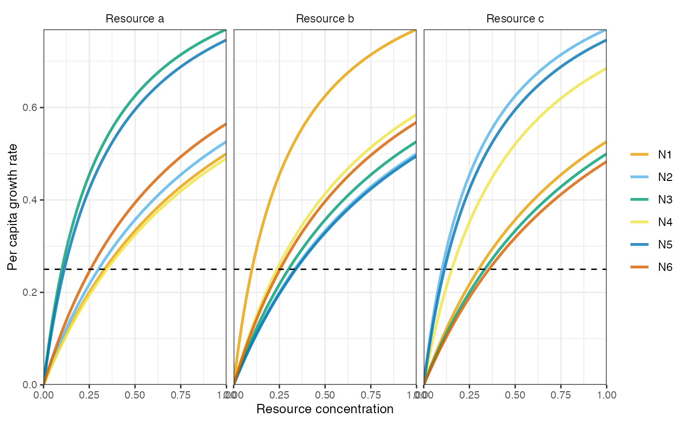

classic-results.RmdThis vignette reproduces classic results from the literature with rescomp.
library(rescomp)
pars <- spec_rescomp(
spnum = 6,
resnum = 3,
funcresp = "type2",
mumatrix = list(matrix(c(1, 1, 1,
1, 1, 1,
1, 1, 1,
1, 1, 1,
1, 1, 1,
1, 1, 1),
nrow = 6,
ncol = 3,
byrow = TRUE)),
kmatrix = matrix(c(1.00, 0.30, 0.90,
0.90, 1.00, 0.30,
0.30, 0.90, 1.00,
1.04, 0.71, 0.46,
0.34, 1.02, 0.34,
0.77, 0.76, 1.07),
nrow = 6,
ncol = 3,
byrow = TRUE),
qmatrix = matrix(c(0.04, 0.08, 0.14,
0.07, 0.08, 0.10,
0.04, 0.10, 0.10,
0.10, 0.10, 0.16,
0.03, 0.05, 0.06,
0.02, 0.17, 0.14),
nrow = 6,
ncol = 3,
byrow = TRUE),
resspeed = 0.25,
resconc = c(6, 10, 14),
mort = 0.25,
cinit = c(0.1 + 1/100, 0.1 + 2/100, 0.1 + 3/100, 0.1, 0.1, 0.1),
essential = TRUE,
totaltime = 15000,
introseq = c(0, 0, 0, 1000, 2000, 5000)
)
#> Model properties
#> * 6 consumer(s) and 3 resource(s)
#> * Consumers have type 2 functional responses
#> * Resources are essential
#> * Resource supply is continuous (e.g. chemostat)
#> * Mortality is continuous
#>
#> Simulation properties
#> * Simulation time: 15000 time steps
#> * Init state: consumer(s) = [0.11, 0.12, 0.13, 0.1, 0.1, 0.1], resource(s) = [6, 10, 14]
plot_funcresp(pars)
m1 <- sim_rescomp(pars)
#> Warning in checkevents(events, times, Ynames, dllname): Not all event times
#> 'events$time' are in output 'times' so they are automatically included.
#> Warning in checkevents(events, times, Ynames, dllname): Some time steps were
#> very close to events - only the event times are used in these cases.
plot_rescomp(m1, resources = FALSE)Reproduces Fig 1c from Huisman and Weissing (1990).